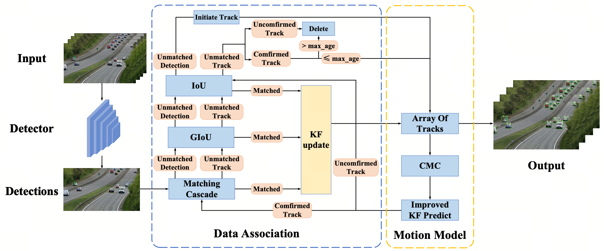

优化轨迹匹配顺序Improved matching stage
重新组织匹配阶段，优先处理未匹配轨迹，并将运动线索纳入代价计算，降低遮挡与相似外观造成的错误关联。
Reorganized matching, prioritized unmatched tracks, and incorporated motion cues into association costs.
MULTI-OBJECT TRACKING · AIPR 2024
面向复杂场景下遮挡、相机运动与轨迹匹配不稳定等问题，对 DeepSORT 的数据关联与运动建模链路进行改进，以提升多目标跟踪的准确性与鲁棒性。
An extension of DeepSORT that improves data association and motion modeling for more accurate and robust multi-object tracking in complex scenes.
检测结果如何在连续帧间稳定关联，是 MOT 系统减少 ID 切换并维持完整轨迹的关键。
Stable association across frames is essential to reduce identity switches and preserve trajectories.
DeepSORT 通过运动信息与外观特征关联检测框和历史轨迹，但在遮挡、快速运动及相机运动等复杂场景中，固定运动假设和匹配顺序可能造成预测偏差或关联错误。本研究围绕匹配阶段、卡尔曼运动模型与相机运动补偿进行改进。
DeepSORT associates detections with tracks using motion and appearance. Occlusion, fast movement, and camera motion can weaken fixed motion assumptions and cause association errors, motivating improvements to matching, filtering, and compensation.
架构由数据关联与运动模型两部分组成，沿 tracking-by-detection 主链路完成检测、匹配、轨迹预测与更新。
The architecture combines data association and motion modeling within a tracking-by-detection pipeline.

从“轨迹怎么预测”和“候选框怎么匹配”两个层面提升复杂场景适应性。
Improve robustness at both prediction and association stages.
重新组织匹配阶段，优先处理未匹配轨迹，并将运动线索纳入代价计算，降低遮挡与相似外观造成的错误关联。
Reorganized matching, prioritized unmatched tracks, and incorporated motion cues into association costs.
通过自适应噪声缩放改善运动状态预测，增强对运动变化的适应能力。
Used adaptive noise scaling to improve state prediction under changing motion.
引入基于运动信息的相机补偿，减少镜头运动对目标位移估计的干扰。
Introduced motion-based camera compensation to stabilize displacement estimates.
围绕研究问题、方法设计、实验分析与论文撰写推进完整研究工作。
Led the research from problem framing and method design through experiments and writing.
研究成果形成会议论文，并对应一项已授权国家发明专利。
The work resulted in a conference paper and a granted Chinese invention patent.
AdvSORT: Advancing DeepSORT with Improved Data Association and Motion Modeling
已授权 · 专利号 ZL202311830458.5Granted · Patent No. ZL202311830458.5